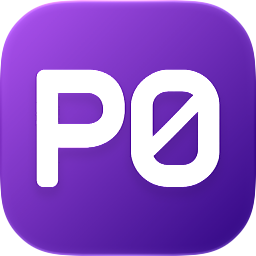
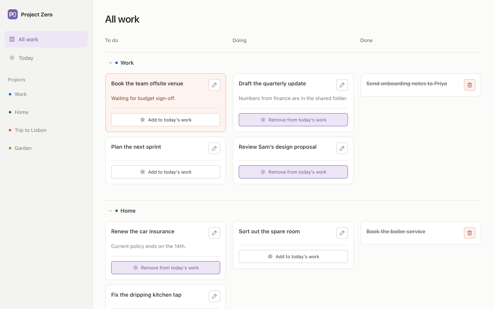
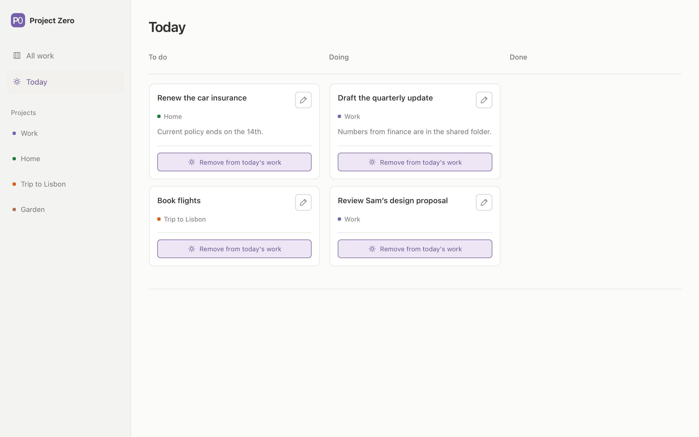
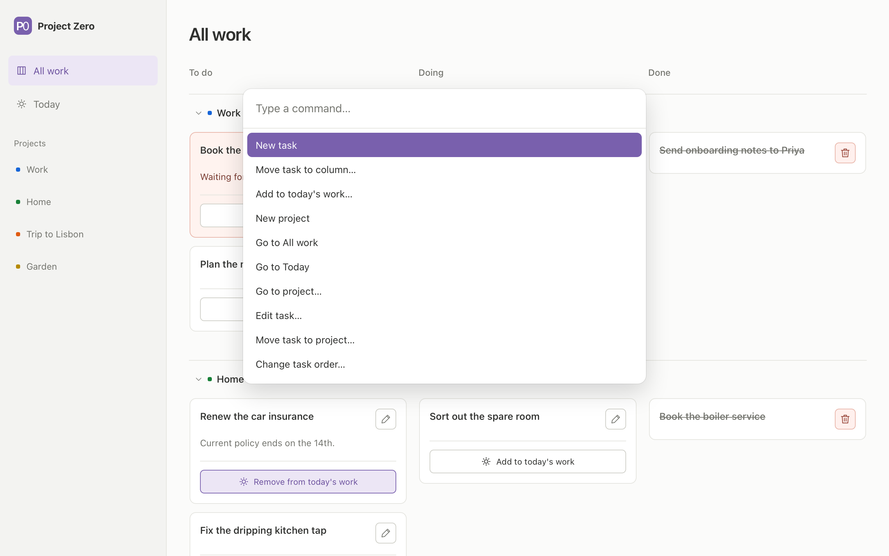
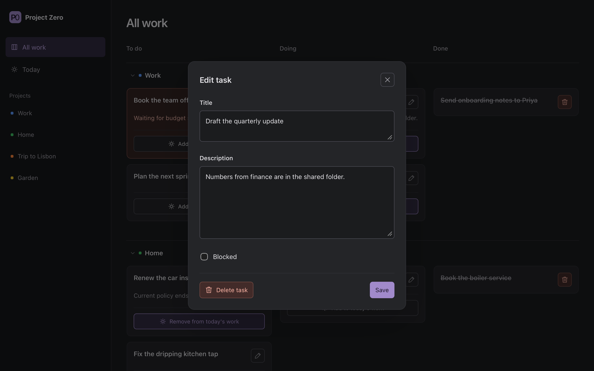
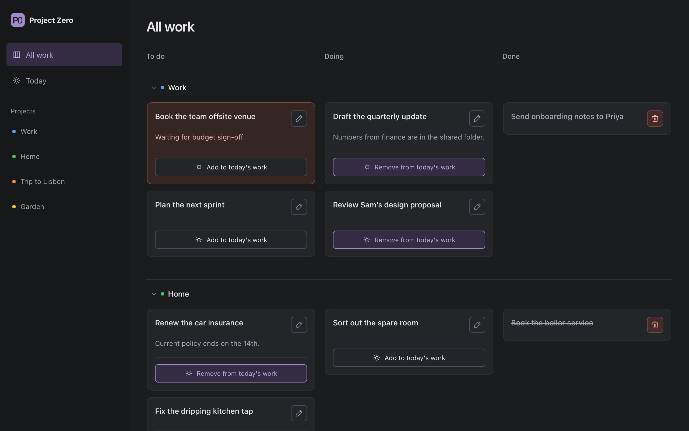

Everything at a glance
Each project is a row of To do, Doing and Done. Drag a card to change its status or its place: order is priority, so what's at the top is what's next. Rename the columns or add your own.

A clear view of what's next.
A small to-do board for your Mac that works like a paper list. See what's in progress at a glance, add tasks in a moment, and put them in the order they matter.
Free · Apple silicon (M1 or later) · macOS 11 or later

Each project is a row of To do, Doing and Done. Drag a card to change its status or its place: order is priority, so what's at the top is what's next. Rename the columns or add your own.
Pick tasks from any project for today. They stay where they belong, Today keeps its own order, and they stay until you take them off or clear the day.
Every command is in the palette (⇧⌘P): add a task, move it, reorder it, mark it blocked, or jump to a project, all by name. The commands you use most come first.
Flag a task as blocked and it stands out where it is, with the reason in its description, until you clear the flag or finish it.
Every change is saved the moment you make it, and the file is never left half written. Project Zero keeps backups by itself, and you can export your board or restore it at any time.
No account, no cloud and no tracking. Your board is one file on your own Mac, and the app works offline.



